Макеты
У нас бывают три вида макетов. Имиджевые — это про наш бренд, про пиццерии в целом, доставку, что открываемся, что ищем людей, что какие мы молодцы. Продуктовые — это про продукты. Например, когда новую пиццу сделали и ну везде рекламировать, мол, посмотрите, какая пицца. А акционные — это когда мы предлагаем какие-то условия: восемь по цене пяти, купи и вот это еще прихвати, ну и разное такое.
Общие дизайн-принципы
Создавая макеты, мы следуем определенному набору правил или, как мы их называем, принципов. Они немного различаются между собой для каждой категории, но есть и общие:
— Создаем макеты с учетом системы якорей: оранжевого цвета, набора фирменных иконок, шрифтовой системы и системы сеток.
— Мы любим не перегруженную, легкую для восприятия верстку: один носитель — одно сообщение.
— Предпочитаем эмоциональный, но простой и понятный текст.
— Создаем фотографии и иллюстрации со смыслом, и любим, когда в них заложен твист.
— Используем шаблоны с заданным набором иконок и кегельной сеткой.
Имиджевые макеты
С помощью имиджевых макетов мы продвигаем бренд в целом, а не конкретный продукт.
К таким макетам мы относим федеральные кампании, оформление пиццерий и все, что связано с наймом сотрудников.
— Мы предпочитаем выделяться благодаря оранжевому фону на цветных фотографиях или оранжевым акцентам на черно-белых.
— Придумываем простые, но креативные сообщения. Например, «Додо последнего кусочка», «Додоставляем».
— Показываем эмоциональные фотографии, которые раскрывают идею сообщения.
Продуктовые макеты
Чтобы было проще, мы разделили продукты на три категории.
Продукты A или «звездные» продукты
К ним относятся сезонные пиццы и «революционные» продукты.
Как продвигаем:
— Подчеркиваем на макете вкус и качество продукта.
— Помогаем раскрыть вкус продукта названием. Например, название «Жар-Баран» сразу объясняет, что пицца с бараниной.
— Изображаем продукт на фотографии в выигрышном свете и вызываем ей обильное слюноотделение.
— Обязательно добавляем в макет «изюминку», как, например, знак мира на макете пиццы «Четыре сыра».
— Создаем уникальный леттеринг. Он должен разделять общие черты с фирменным заголовочным шрифтом.
— Придумываем иммерсивные решения: от креативной кампании в соцсетях до оформления фасадов и интерьеров пиццерий.
— А еще мы можем иногда нарушать собственные правила, чтобы создать вау-продвижение.
Продукты B
Здесь собрались пиццы с обновленными рецептами, новые закуски и напитки.
Как продвигаем:
— Создаем дизайн на основе шаблона, но иногда можем отойти от этого правила.
— Предпочитаем яркие, чистые цвета. Они не должны отвлекать внимание от продукта.
— Показываем качество и вкус продукта простыми, но вкусными фотографиями.
— Набираем название шрифтом для заголовков. Иногда позволяем себе нарисовать простой леттеринг, как в макете с «Рыжим рожком».


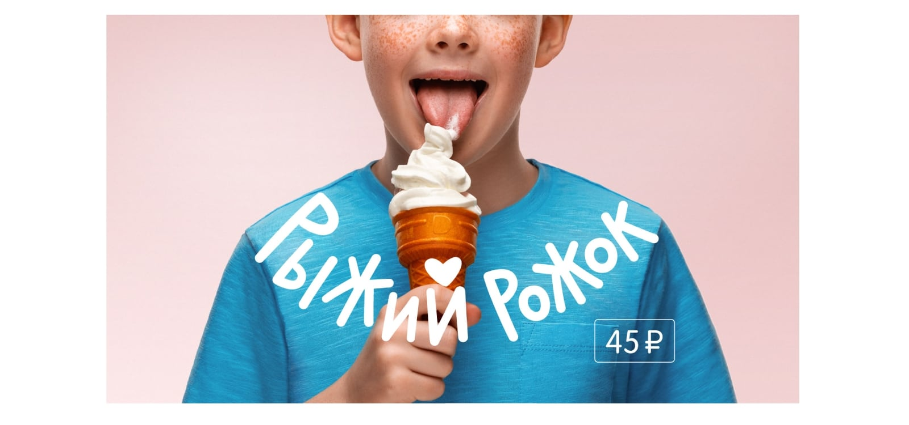
Продукты С
В этой категории мы объединили тестовые продукты. Обычно после тестового запуска мы создаем новые макеты, но уже с подходом категории A или B.
Как продвигаем:
— Создаем макеты только на основе шаблонов.
— Набираем названия шрифтом для заголовков. Никогда не создаем уникальный леттеринг.
— Используем только каталожные фотографии.
— Подбираем цветовую схему из списка дополнительных цветов ТВ-меню в соответствии с основными ингредиентами продукта.
Акционные макеты
В нашей системе акционные макеты бывают двух типов:
— Комбо-предложения.
— И, собственно, акционные.
Все акционные макеты создаются на основе шаблонов с набором иконок и кегельной сетки. Элементы в этих наборах уже заданного размера, который не нужно адаптировать под формат. Эдакий UI Kit для рекламных макетов.
Комбо-предложение
Как продвигаем:
— Создаем на основе шаблона.
— Делаем акционные макеты визуально похожими между собой.
— Придумываем простой и понятный заголовок, который раскрывает выгоду предложения.
— Показываем идею «много за мало» через количество продуктов или ситуацию потребления.
— Показываем качество продукта через реалистичные и вкусные фотографии.
— Кодируем акционные макеты в большинстве случаев оранжевым цветом, но «играем» с текстурами, чтобы отделить одну рекламную кампанию от другой.
— Используем на макетах цвета, отличные от оранжевого, когда понимаем, что на рекламном носителе с разных сторон будут разные акционные предложения.
Акционные предложения
Как продвигаем:
— Создаем на основе шаблона.
— Делаем акционные макеты визуально похожими между собой.
— Придумываем простой и понятный заголовок, который раскрывает выгоду предложения.
— Показываем качество продукта через реалистичные и вкусные фотографии.
— Кодируем акционные макеты в большинстве случаев оранжевым цветом, но «играем» с текстурами, чтобы отделить одну рекламную кампанию от другой.
— Используем на макетах цвета, отличные от оранжевого, когда понимаем, что на рекламном носителе с разных сторон будут разные акционные предложения.


 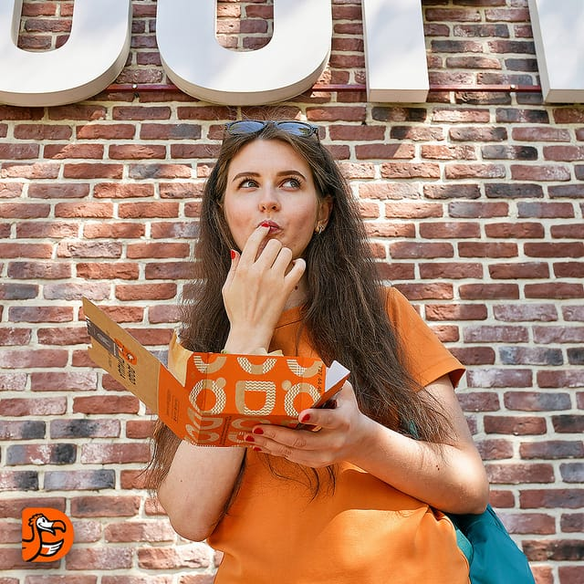
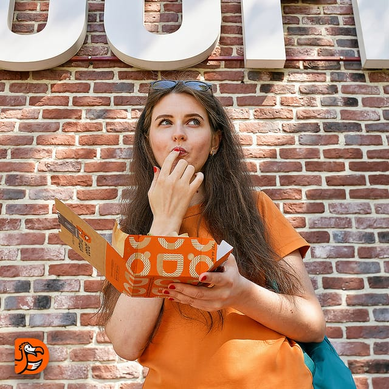

 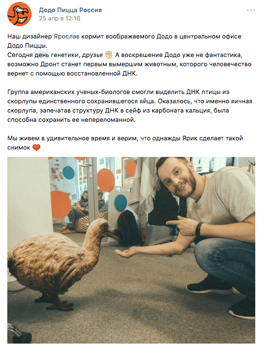
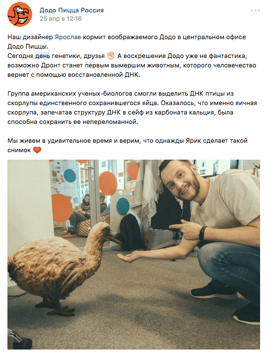


 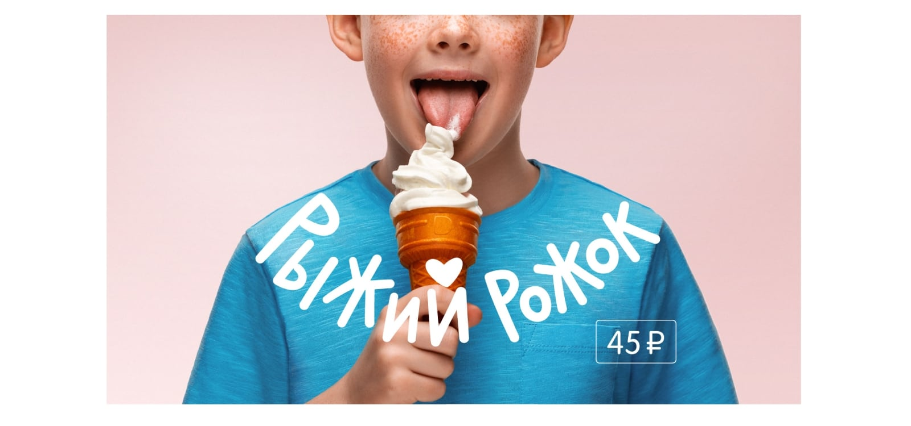
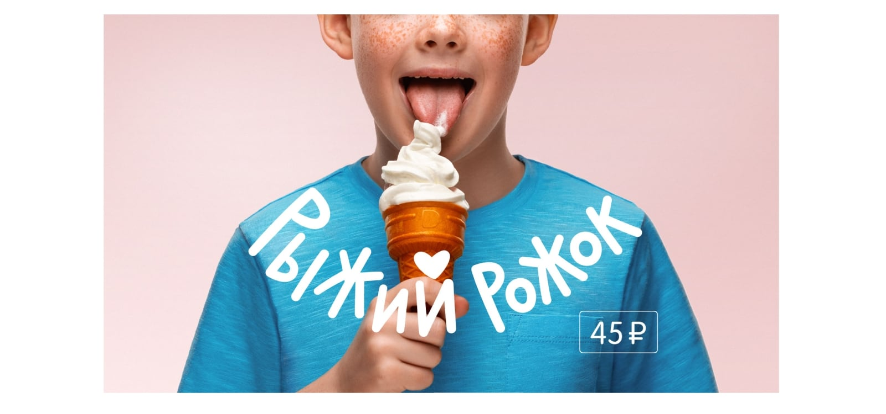


 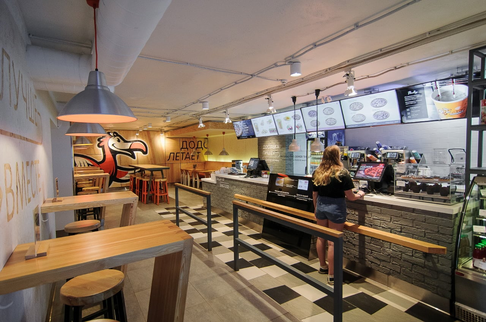
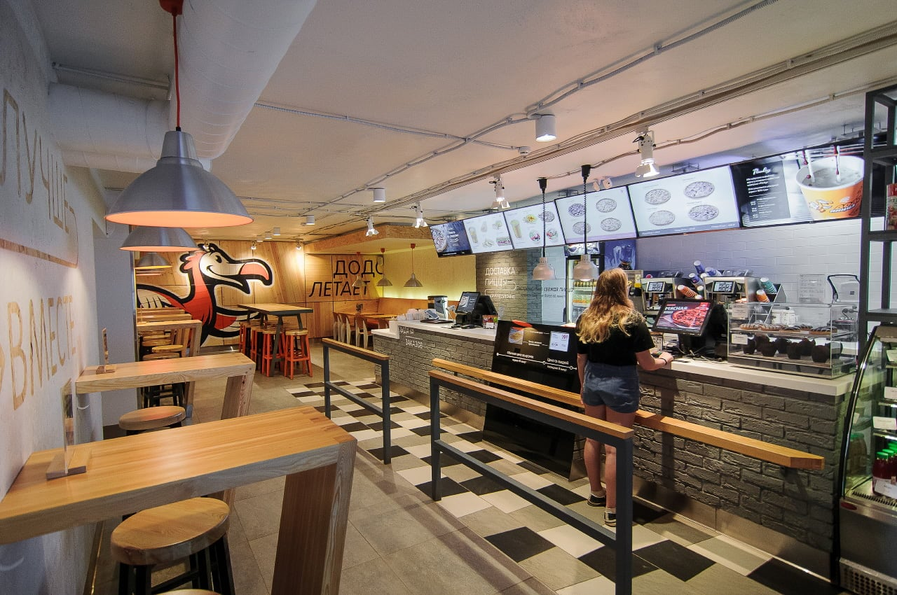 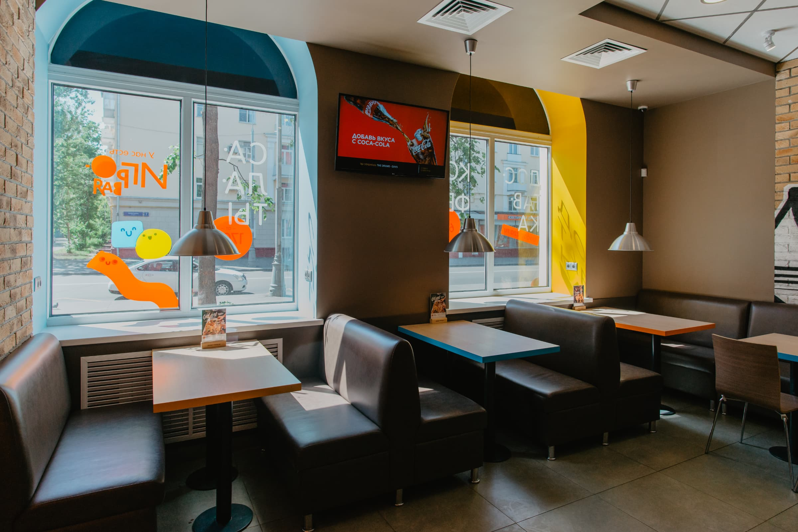
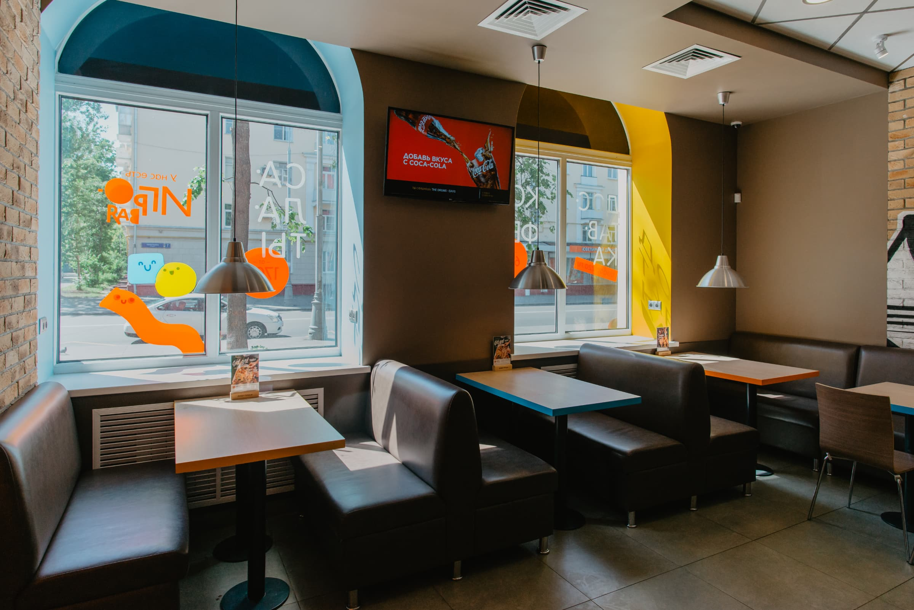